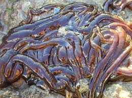

Você sabia que o maior animal do mundo não é a baleia azul? Ela é com certeza o maior mamífero, porém o maior animal é um verme com apelido de "cadarço-de-botas"(Lineus longissimus).
É claro que uma baleia é colossal e pesa toneladas, mas esse carinha aqui é com certeza o maior animal em comprimento do mundo podendo chegar ate 55 metros. Ele fica todo enrroladinho assim por que fica embaixo de pedras e quando ele se sente ameaçado ele começa a soltar partes do corpo(Obs.: ele não é um parasita, então não faz mal para os seres humanos ;D).